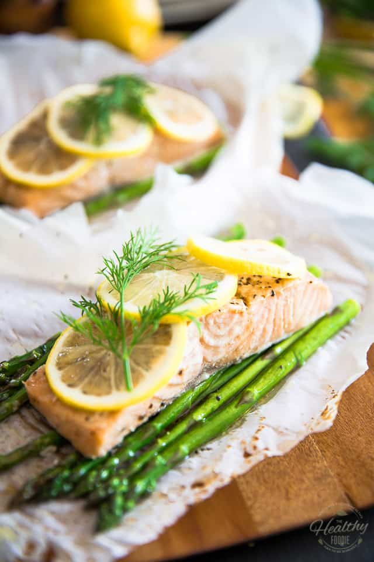

Salmon baked in parchment paper with asparagus and lemon

Description
Cooking Salmon fish in parchment paper is really easy and simple yet it is delicious and healthy.
Ingredients
- Parchment Paper
- 1 teaspoon of olive oil
- 5 spear asparagus
- 6 ounce of skinless, boneless, center-cut salmon fillet
- salt and ground black pepper to taste
- 1 teaspoon of extra-virgin olive oil
- 8 fresh dill sprigs
- 1 large lemon, sliced thinly
Steps
- Preheat oven to 400 degrees F (200 degrees C).
- Place a large piece of parchment paper on your work surface and coat the parchment with olive oil.
- Bring a pot of lightly salted water to a boil. Add asparagus and cook for about 5 minutes. Drain in a colander and immediately immerse in ice water for several minutes to stop the cooking process. Once the asparagus is cold, drain well and set aside.
- Place a salmon fillet over the asparagus, drizzle with a little bit of extra-virgin olive oil, season with salt and black pepper then top with 3 slices of lemon and a couple of drill fronds.
- Fold parchment paper over the salmon and seal the edges by making overlapping folds all around the edge. At the end, fold the last crease in the opposite direction of the rest to ensure it seals. Place pouches on a baking sheet.
- Bake in the preheated oven for 15 minutes. Remove from oven, let sit for 5 minutes and then carefully cut open the parchment paper.
- Garnish with additional fresh dill and serve immediately.